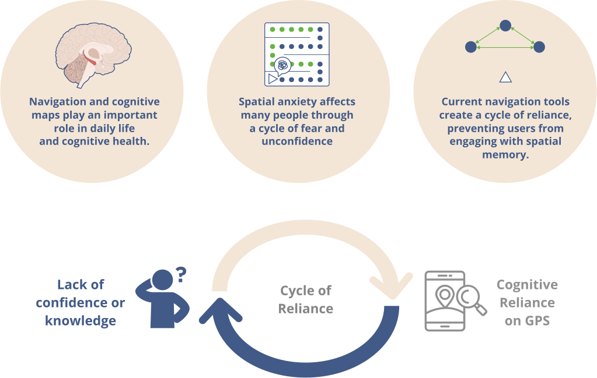
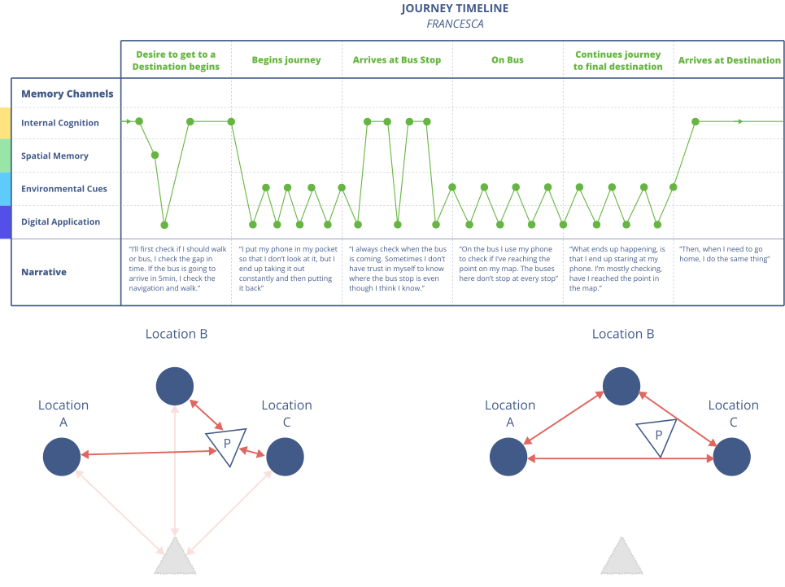
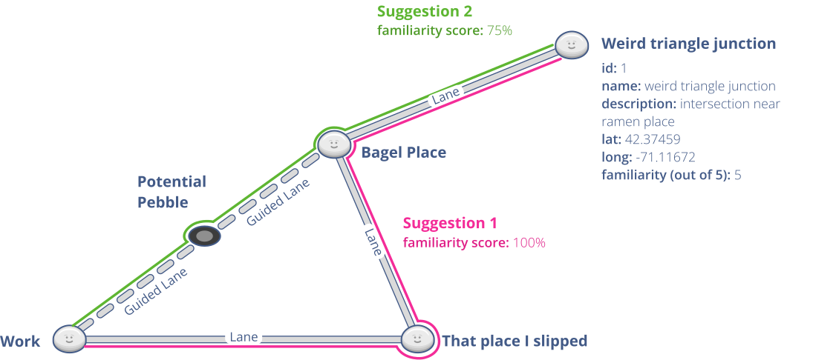
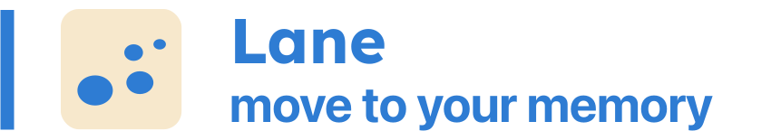
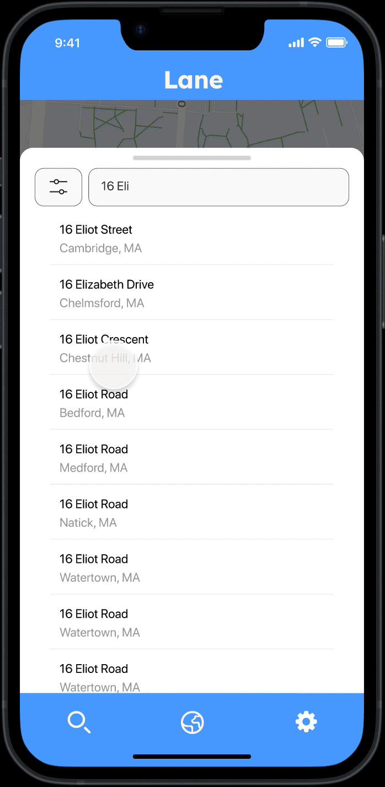

What if our assisted navigation tools could prioritize helping us learn?
Lane
Team:
Myself, Advised by Jose Luis Garcia
Timeline:
Thesis
My Role:
Research, UI/UX Design, Front-end and Back-end Engineering
Introduction
Have you ever felt stress towards navigating somewhere you should be familiar with? Have you
ever forgotten how you got somewhere right after arriving? These experiences imply that
users of assisted navigation technology are not set up for self-reliant success and
retention.
Lane is an alternative navigation system for pedestrian users with spatial anxiety.

Problem Space
GPS navigation and journey planning through web mapping platforms have brought about an
endless amount of convenience to consumers. However, experiences with these tools vary
between users. For individuals who experience degrees of spatial anxiety, these tools offer
momentary relief and guidance, however, do not provide them with the long-lasting knowledge
they need to reduce that anxiety. This anxiety leads individuals to rely heavily on their
assisted navigation tools, however, an over-reliance on navigation systems has been proven
to reduce the spatial memories of its users, causing heavy dependence on the tool without
cognitively orienting themselves.

Research
This project draws upon studies within psychology and neuroscience to propose an alternative
system that caters to individuals who may experience degrees of this anxiety, focusing on
helping individuals learn and recall.
Within the fields of psychology and neuroscience, researchers describe two primary
approaches to navigation: egocentric and allocentric (Clemenson et al, 2021; Levin et al,
2021; Dahmani, 2020; Kemp, 2022). One main difference between these two modes of navigation
is that egocentric approaches trigger stimulus and motor response strategies from the brain,
whereas allocentric approaches trigger episodic and relational memory (Clemenson et al,
2021).
This project also learned from expert practitioners within the sport of Orienteering as well
as K-12 educators to help inform strategies that help them.

Initial Ideas
Initial ideas began with thinking about different approaches to displaying a journey. One of
the main iterative exercises was to figure out which information was most crucial for a
user, and which information could be withheld.
Another ideation exercise was to understand whether these journeys would be more
explorative, or destination-oriented.

Technical Development
As this method of navigation had not been tested before, the proposed metrics of success
came from key takeaways within user research. As a result, the success metrics for the core
functionality of the project, was also based upon this.

Project Proposal
Lane is a rethinking of the traditional GPS routing system to center around pedestrian
users
with varying degrees of spatial anxiety. Built with React Native, it proposes the use of
memory attachments named ‘Pebbles’ and route systems named ‘Lanes’ as a way to help
users
navigate within familiar and new destinations, nudging users to recall observations,
thoughts, memories, and ideas that they experience in their everyday lives across their
built environment.




Journey Journaling
Get Prompts and Tasks
